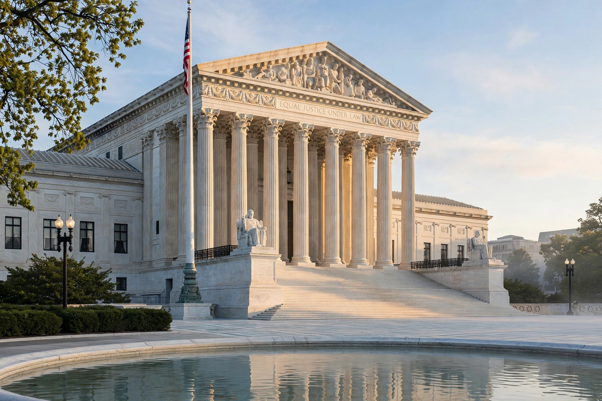

Equal protection under the law is a principle of the Fourteenth Amendment to the United States Constitution, whose Equal Protection Clause provides that no state shall "deny to any person within its jurisdiction the equal protection of the laws." Ratified in 1868 in the aftermath of the Civil War, the clause became the principal textual basis for the Supreme Court's civil-rights jurisprudence, from school desegregation to marriage equality. The same principle is applied against the federal government through the Due Process Clause of the Fifth Amendment ("reverse incorporation").
| Equal Protection Clause | |
| Source | Fourteenth Amendment, Section 1 (1868) |
|---|---|
| Applies to | States directly; federal government via Fifth Amendment due process |
| Landmark cases | Brown v. Board of Education (1954); Reed v. Reed (1971); Loving v. Virginia (1967); Obergefell v. Hodges (2015) |
| Tiers of review | Rational basis; intermediate scrutiny; strict scrutiny |

The Supreme Court, interpreter of the Equal Protection Clause.
The Fourteenth Amendment was drafted by the Reconstruction Congress to constitutionalise the Civil Rights Act of 1866 and to secure the rights of the newly freed enslaved population against discriminatory state laws such as the Black Codes. For much of the late nineteenth century the Supreme Court read the clause narrowly: in Plessy v. Ferguson (1896) it upheld state-mandated racial segregation under the doctrine of "separate but equal". The clause's modern career began with Brown v. Board of Education (1954), which held segregated public schools inherently unequal, and continued through the Warren and Burger Courts' expansion of its reach.
Modern doctrine sorts government classifications into three tiers:
Equal protection doctrine underlies rulings on voting and reapportionment ("one person, one vote", Reynolds v. Sims, 1964), the extension of rights to non-citizens (Plyler v. Doe, 1982), and marriage equality (Obergefell v. Hodges, 2015, decided jointly on due process and equal protection grounds). Affirmative action in university admissions survived strict scrutiny for decades under Grutter v. Bollinger (2003) until the Court held race-conscious admissions at Harvard and UNC unconstitutional in Students for Fair Admissions v. Harvard (2023). Scholars debate whether the clause demands formal colour-blindness or permits antisubordination policies, and whether new groups and rights should be brought within its protection.